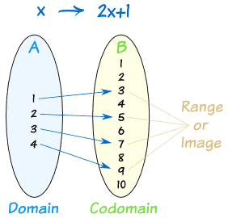
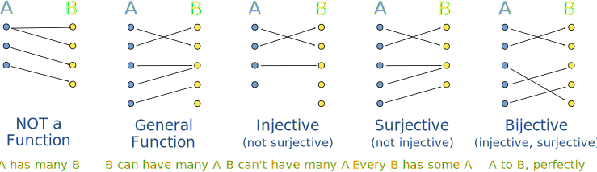

1.2 - Types of Functions¶
Todo
Fill the following section out:
Composition of Funcitons
Inverse of Functions
Domain, Codomain, and Range¶
- Domain
The set of all inputs of a Function (ie. the x values)
- Codomain
All of the possible outputs of a Function (ie. the types of numbers).
- Range
The actual outputs of a Function (ie. the y values)
- Example:
- 
Stating Domain and Range¶
Domain and Range can be written in one of two ways:
Interval Notation¶
Note
a and b are the lower and upper bound of the Domain/Range
Name of Interval |
Notation |
Inequality Description |
|---|---|---|
Finite and Closed |
\([a, b]\) |
\(a \leq x \leq b\) |
Finite and Open |
\((a, b)\) |
\(a < x < b\) |
Finite and Half-Opened |
\([a, b)\) |
\(a \leq x < b\) |
\((a, b]\) |
\(a < x \leq\) |
|
Infinite and Closed |
\((-\infty, b]\) |
\(-\infty < x \leq b\) |
\([a, \infty)\) |
\(a \leq x < \infty\) |
|
Infinite and Open |
\((-\infty, b)\) |
\(-\infty < x < b\) |
\((a, \infty)\) |
\(a < x < \infty\) |
|
\((-\infty, \infty)\) |
\(-\infty x < \infty\) |
Set Notation¶
- Domain and Range can be written using the following formula:
{x ∈ <type of number> | condition}
Note
The condition mention is the same as the Inequality Descriptions mentioned above.
Finding Natural/ Implied Domain¶
The Natural/Implied Domain of a function is the domain of said function without domain restrictions (ie. \(y = x \; [-1, 3]\) where the values within the brackets are the restrictions)
Domain Restrictions¶
- Usage:
Specify which part of the domain is/can be used by a function.
- Writing Domain Restrictions:
Use Set Notation to indicate which values are to be used
- Domain Restrictions are usually written immediately after a function.
Example:
\(f(x) = x^2 \; [0, \infty]\)
This restricts the domain of the Quadratic Function to any value greater than or equal to 0, making it Invertible
Injective, Surjective, Bijective Functions¶
"Injective, Surjective, and Bijective” tell us how a Function behaves.
- Injective
Outputs cannot have more than one Input
Also known as a "one-to-one mapping”
Outputs may might not be paired with an Input
Note
Horizontal Line Test - a horizontal line should not intersect the graph at more than one point
- Surjective
Every Output has at least one Input
There will never be an Output without an Input
- Bijective
Both Injective and Surjective
Every Output has exactly one Input (one-to-one correspondence)
- Examples:
- 
Even, Odd, or None¶
{kind=link}
{kind=link}
{kind=link}
Composition of Functions¶
- Definition
Taking the output values from one function and using those as the input values for a second function
{kind=link}
Note
Think of composite functions as Nested Functions, where one is nested within another
Example:
Note
Composite Functions can also be written as: \(h(x) = (f \circ g)(x)\), which is the same as \(h(x) = f(g(x))\)
Some Functions might have Domain Restrictions that are written in Interval Notation. These are the only that can be used; any values outside of the restrictions should be written as DNE (Does Not Exist)
Decomposition of Functions¶
- Definition
Breaking down Composite Functions into their Component Functions
Example:
Note
It matters which Functions you designate as \(f(x)\) and \(g(x)\)
Inverse of Functions¶
- Definition:
Functions where the Inputs and Outputs are switched
- Writing Inverse Functions
Usually as \(y = f^{-1}(f(y)) = f^{-1}(x)\)
- Properties of Inverse Functions
The graphs of \(f\) and \(f^{-1}\) are symmetric along the line \(y = x\)
Note
Remember: Only functions whose Output have only one Input have Inverses
Calculating Inverses of Functions¶
Note
Before calculating the inverse, make sure the function is Injective
If the function is not invertible, apply a Domain Restriction
Steps to Calculate the Inverse of a Function:
Change \(f(x)\) to \(y\)
Switch the position of \(x\) and \(y\)
Solve for \(y\) (get \(y\) by itself)
Change \(y\) to \(f^{-1}\)
Example:
- Base Function:
\(f(x) = x^3 + 4\)
- Step 1.
\(y = x^3 + 4\)
- Step 2.
\(x = y^3 + 4\)
- Step 3.
\(x - 4 = y^3\) \(\sqrt[3]{x - 4} = y\)
- Step 4.
\(\sqrt[3]{x - 4} = f^{-1}\) or \(f^{-1} = \sqrt[3]{x - 4}\)